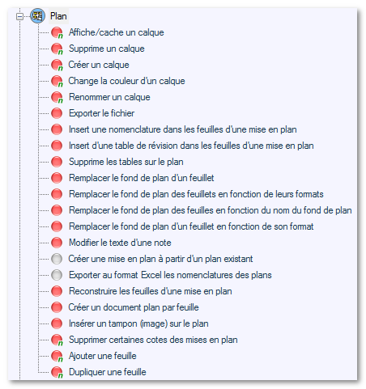

Pour certaines conditions/opérations la pastille est de couleur grise, cela signifie que cette condition ne nécessite pas l'ouverture de SOLIDWORKS. C'est à dire que si l'on crée des actions qui ne comportent que des conditions et des opérations ayant la pastille grise, l'outil "Integration" ne chargera pas les documents dans SOLIDWORKS et le traitement, dans ce cas, sera très rapide.

Ne nécessite pas l'ouverture du document dans SOLIDWORKS
Ne nécessite pas l'ouverture du document dans SOLIDWORKS (Nouveauté)
Nécessite l'ouverture du document dans SOLIDWORKS
Nécessite l'ouverture du document dans SOLIDWORKS (Nouveauté)